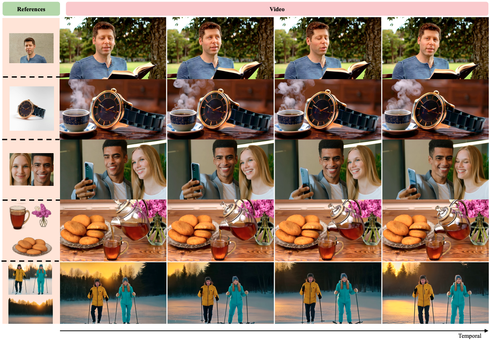
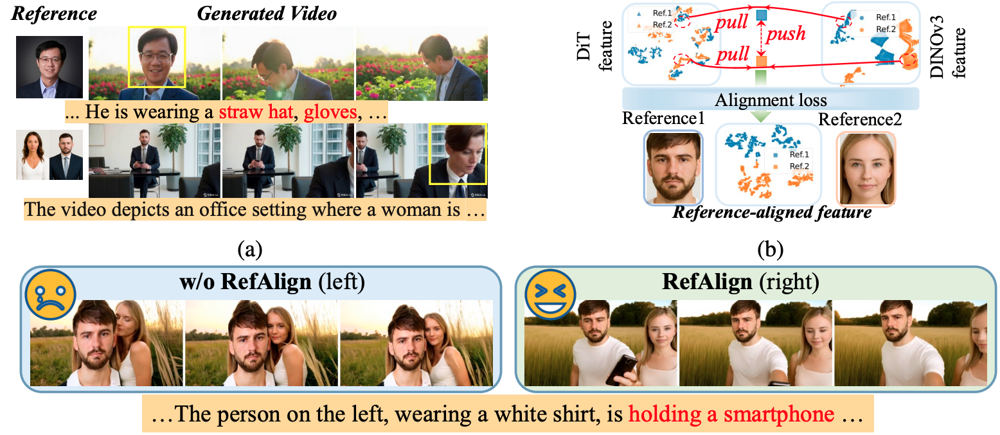
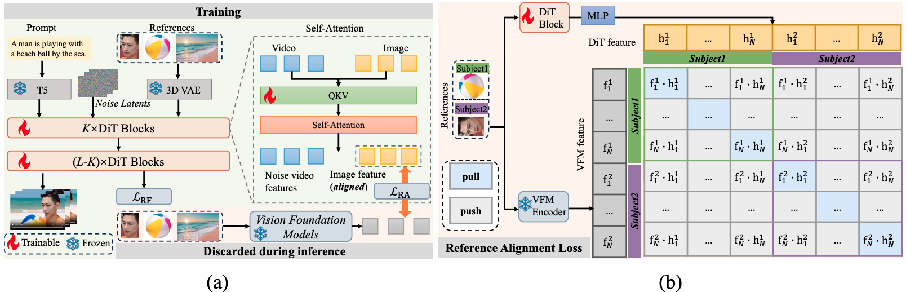
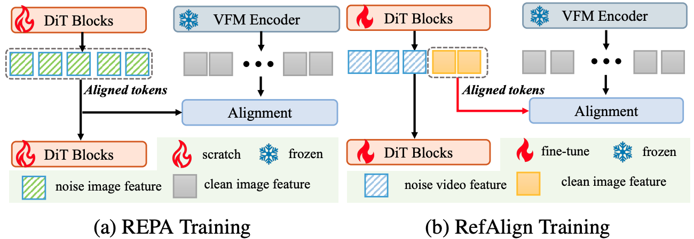
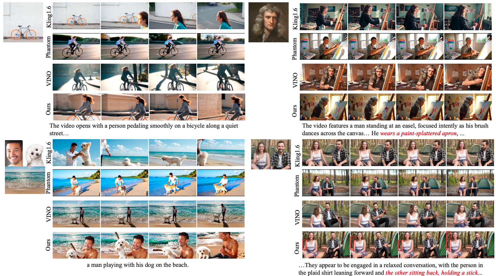
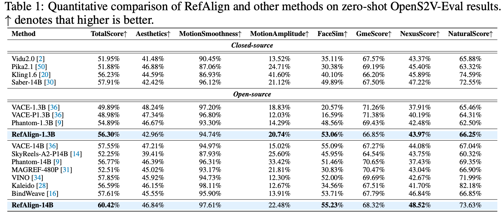
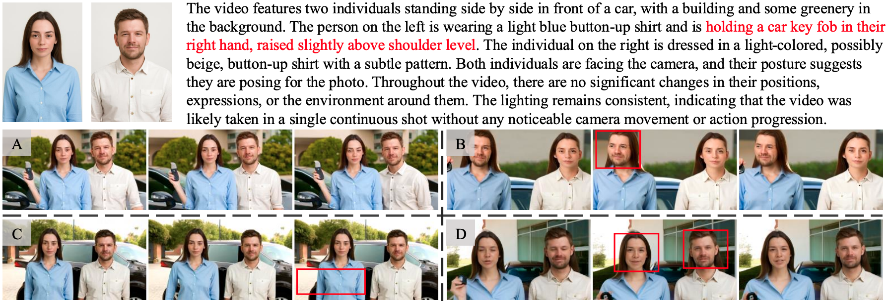

RefAlign: Representation Alignment for Reference-to-Video Generation

Reference-to-video generation using our proposed method, RefAlign.
Abstract
Reference-to-video (R2V) generation is a controllable video synthesis paradigm that constrains the generation process using both text prompts and reference images, enabling applications such as personalized advertising and virtual try-on. In practice, existing R2V methods typically introduce additional high-level semantic or cross-modal features alongside the VAE latent representation of the reference image and jointly feed them into the diffusion Transformer (DiT). These auxiliary representations provide semantic guidance and act as implicit alignment signals, which can partially alleviate pixel-level information leakage in the VAE latent space. However, they may still struggle to address copy--paste artifacts and multi-subject confusion caused by modality mismatch across heterogeneous encoder features. In this paper, we propose RefAlign, a representation alignment framework that explicitly aligns DiT reference-branch features to the semantic space of a visual foundation model (VFM). The core of RefAlign is a reference alignment loss that pulls the reference features and VFM features of the same subject closer to improve identity consistency, while pushing apart the corresponding features of different subjects to enhance semantic discriminability. This simple yet effective strategy is applied only during training, incurring no inference-time overhead, and achieves a better balance between text controllability and reference fidelity. Extensive experiments on the OpenS2V-Eval benchmark demonstrate that RefAlign outperforms current state-of-the-art methods in TotalScore, validating the effectiveness of explicit reference alignment for R2V tasks.
Motivation

Method

Relationship to REPA

Qualitative Results

Quantitative Results

Ablation Study

More Visualization Results
Poster
BibTeX
@article{YourPaperKey2024,
title={Your Paper Title Here},
author={First Author and Second Author and Third Author},
journal={Conference/Journal Name},
year={2024},
url={https://your-domain.com/your-project-page}
}